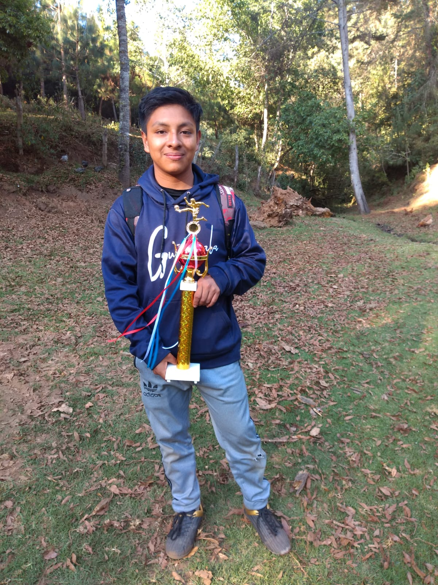
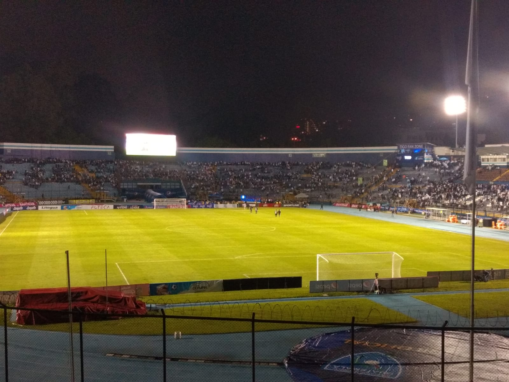

Desde muy pequeño me ha gustado el fútbol, es un deporte que me gusta mucho desde pequeño lo comencé a practicar ya que siempre me llamó la atención, mi admiración hacía el deporte surgió gracias a mi papá ya que el me enseño a jugar cuando tenía 9 años comencé a jugar en una académia en la cual jugue mis primeros partidos contra equipos de otros municipios, también pude mejorar mi nivel de juego entrenando todas las clases y no faltando a ellas, incluso gracias a mi esfuerzo llegue a jugar en el Estadio Nacional Doroteo Guamuch Flores a mis 12 años.
Desde muy pequeñome mi club de Fútbol favorito ha sido el FC Barcelona ya que siempre me gustó ver como jugaban y ganaban en sus epocas "imparables" desde que recuerdo he sido fan de Messi ya que siempre me gustó su éstilo de juego, el club favorito de la liga Nacional de Guatemala es Comunicaciones y jugador favorito es el "Moyo Contreras", siempre he apoyado a la selección nacional en sus partidos, he asistido a partidos en el estadio nacional de Guatemala cuando ha jugado la selección y también los miro por televisión

Actualmente juego en un equipo que hemos creado con mis amigos en el cual hemos ganado muchos trofeos asi como la foto de arriba también hemos jugado muchos partidos contra otros equipos en los cuales hemos ganado y hemos perdido
Me gusta muhos ver las ligas de los distintos lugares como por ejemplo la Premier League de la cual mi equipo favorito es el Manchester City, en la liga española mi equipo favorito es el Barcelona, en la Seria A es Juventus y asi como en la Bundesliga es el Bayern, asi es como a mi me ha gustado y apasionado este deporte